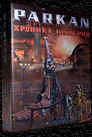
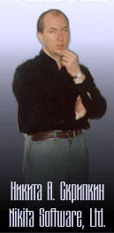
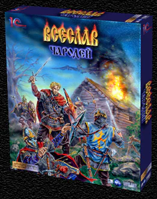
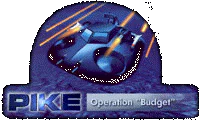
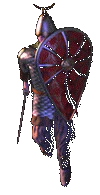
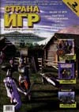
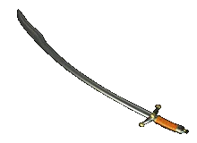

| В течении всей
предыдущей недели на нашем сайте проходил
розыгрыш новой игры "Никиты", "PARKAN:
Имперские Хроники". Все, что надо было сделать
-- ответить на два вопроса и ждать, ждать, ждать... Что ж, Альберт Тимашев дождался --
именно он стал победителем в результате
проведенной нами лотереи среди правильно
ответивших участников.
Но не успели Вы расслабиться,
как начался новый розыгрыш -- на этот раз кто-то
станет обладателем раритетного издания "PIKE:
Операция Громовержец". Все подробности на
страничке Бонусы
|
 |
|
 |
Вот, например,
успешно продолжается полет запущенного
"Никитой" первого сентября "Паркана".
Хорошее настроение их коммерческого директора
однозначно указывает на отличные продажи :) Если у вас есть желание попробовать
игрушку на собственной шкуре, проверьте раздел
про бонусы: в течение этой недели
мы разыграем на сайте одну копию "Паркана".
Слева вы можете видеть
задумчивого Никиту собственной персоной:
мыслями он уже на далеком тропическом пляже... |
| А еще за эти выходные
была закончена коробка для "Всеслава" --
монументальное творение Александра Еремина
отняло у него пару недель напряженного труда, не
говоря уже о времени, проведенном им в изучении
одежды XII века... |
 |
|
 |
Через десять дней в Москву
прибудет первая часть тиража "Пайка 97" в
"Коллекции Игрушек" от 1С. В коробке один
диск и книжка на 80 страниц. Окончательному выбору
аудиотреков, которые попали в переиздание,
предшествовала горячая дискуссия с
использованием предметов офисной обстановки...
Слава богу, обошлось без жертв -- авторов музыки
мы до участия не допустили :) |
|
| На этой неделе
заканчивает работать над персонажами
"Всеслава" профессиональный классический
аниматор и просто отличный человек :)) Алексей
Штыхин. Благодаря ему дружинники князя научились
по-настоящему бегать и драться на мечах -- а
умирают они теперь совсем уж правдоподобно... |
 |
|

|
Если вы следите за
прессой, то наверняка уже стали счастливым
обладателем Страны Игр. Стране стало заметно
лучше, и не только потому, что Всеслав попал на
обложку :). Еще в ней есть хороший обзор Total Anihilation
и толковое итнервью с разработчиками проекта.
Также появился свежий, соблазнительно
толстый номер Навигатора: теперь вы можете
воочию увидеть первые крупицы информации по
"Наследию Ярослава". (Почему-то на скринах из
этой русской игры, иллюстрирующих статью, все
надписи сделаны по-английски :().) |
|
| А в это самое время в Лондоне, в
Олимпия Холле, проходит самая большая
европейская игровая тусовка под названием ECTS.
Достаточно недавно эту выставку купил Miller Freeman,
так что в этом году из-за прогрессивного
менеджмента она обещает стать процентов на 30
покруче... |
|
 |
И последняя новость на
сегодня: продажная :) часть компании 1С переехала
в новый офис на Новослободской. Кому они нужны,
звоните им по телефону (095) 7379257. |
|